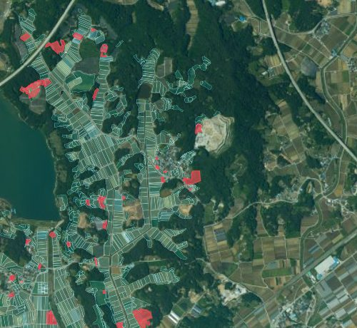

AI 분석 결과 보고서
경작·휴경 분석서비스 · 남원시
남원시 · 작성 2026.10.11 · 영상 2025년 드론영상 · 분석 2026.06.08
개요
AI 분석 결과2,098필지
경작지1,291필지 · 205.0ha
비경작지807필지 · 110.9ha
AI 모델 정확도95%
2025년 드론영상을 경작·휴경 분석서비스로 분석한 결과입니다. 읍면동 32곳에서 2,098필지가 경작지 또는 비경작지로 나왔습니다. AI 모델 정확도는 학습에 쓰지 않은 영상으로 잰 값입니다.
지도

읍면동별 개수 · 면적
| 읍면동 | 경작지 | 비경작지 | 계 | 면적(ha) |
|---|---|---|---|---|
| 운봉읍 | 194 | 43 | 237 | 40.8 |
| 송동면 | 109 | 40 | 149 | 24.2 |
| 대강면 | 37 | 105 | 142 | 21.1 |
| 보절면 | 53 | 85 | 138 | 18.3 |
| 대산면 | 62 | 74 | 136 | 19.7 |
| 덕과면 | 73 | 60 | 133 | 23.0 |
| 사매면 | 63 | 65 | 128 | 22.2 |
| 주생면 | 86 | 40 | 126 | 17.4 |
| 아영면 | 104 | 22 | 126 | 23.8 |
| 금지면 | 36 | 86 | 122 | 21.1 |
| 그 밖 22곳 | 474 | 187 | 661 | 84.3 |
| 합계 | 1,291 | 807 | 2,098 | 315.9 |
우리 대장과 다른 필지
올린 대장주생면 도산·낙동 농지대장 · 1,743필지
AI 결과가 있는 필지21필지
대장은 농지 · AI는 비경작지6필지
대장 필지 1,722곳은 2025년 드론영상 범위 밖이라 AI 분석 전입니다. 자세한 목록은 '행정정보와 비교'에서 봅니다.